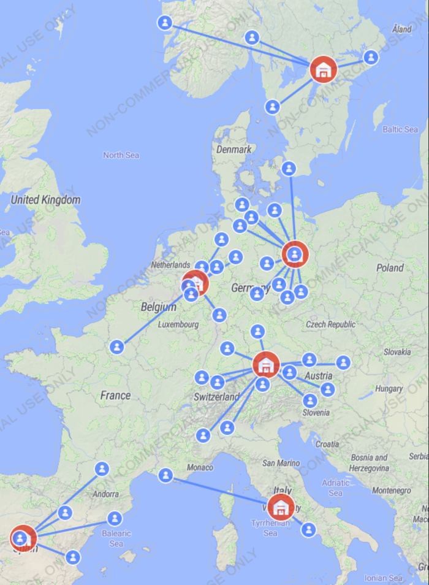
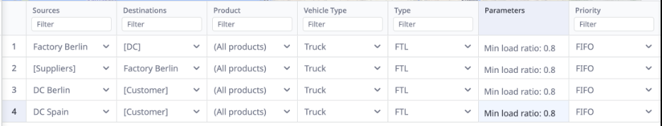
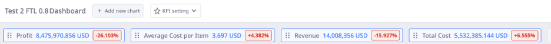

Supply Chain Simulation in AnyLogistix
Results at a glance
Percentages are the changes AnyLogistix displays in its KPI dashboard for that experiment. CONFIRM: that these are measured against your baseline experiment.
Problem
Supply chain network decisions are expensive to test in real life. AnyLogistix lets you simulate a network, change one policy, and see the effect on profit, cost, revenue and service before committing. The question in each experiment: what happens to the KPIs when a single decision changes?
Approach
AnyLogistix is multi-method simulation software. I used it for three kinds of analysis:
- Greenfield analysis: identifying optimal facility locations from geography and demand data.
- Network optimization: evaluating network design, throughput limits and cost tradeoffs.
- Inventory dynamics: modeling how policy changes ripple through supply chain performance.
Scenarios I ran, using a European brewery network (factory, distribution centers and customers):
- Distribution center locationing: redesigning the network by adding a second DC.
- Transportation policy: switching from less-than-truckload (LTL) to full truckload (FTL).
- Inventory policy: raising maximum inventory at the DCs and the factory.
- Sourcing policy: changing from closest-source to cheapest-source.
Each experiment was compared against the others using the same set of KPIs.
Tools
- AnyLogistix (network simulation and KPI dashboards)
Result



Forcing fuller trucks did not save money in this network. Total cost and cost per item rose while revenue and profit fell, which is a reminder that a policy that looks efficient on one metric can hurt the whole system.
CHECK: confirm that reading, and add the main finding from the DC, inventory and sourcing experiments in 1 to 2 sentences each.
What I learned
ADD: 2 to 3 sentences in your own voice.